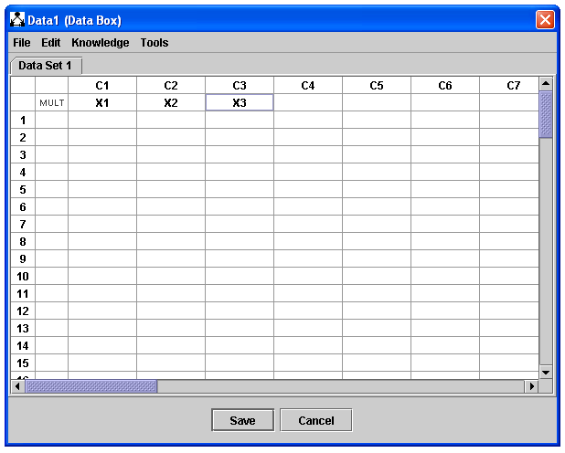
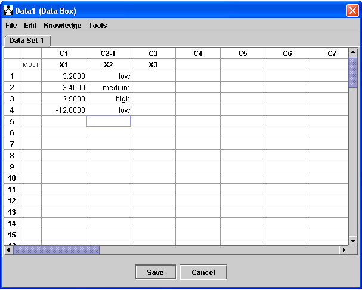

Creating a Tabular Data Set from Scratch |
To create a data set from scratch, first place a Data Box in the main workspace:
Double click the data box, select "Data Box," click OK, and this editor appears:

The column headers indicate which column you're in and (as will be seen shortly) which type of variable data for each column is for. You may type variable names in the row directly beneat the column names.

X1, X2, and X3 are assumed by default to be continuous variables. If you begin typing numeric data into a column that assumption will be confirmed. If you begin typing non-numeric data into a column, the variable will be changed to a discrete variable. Note that the column header below changed from "C2" to "C2-T," indicating that column 2 is discrete.

To copy, cut, delete, etc., values, columns, or columns ranges, use the Edit menu--e.g. selecting the "34.000" below and selecting "Delete Cells" will delete the value.

It is important to understand that a tabular data set consists of a list of columns, that each column has a variable specifying the range of values it may contain, and that columns may be of any length. Since search and estimation procedures typically require that data sets consist entirely of continuous data or of discrete data and that data sets be rectangular, exceptions may be thrown if the data sets you use do not satisfy these criteria. [Note: Probably should create ContinuousData, DiscreteData, and MixedData containers.]
You may find it more to your liking to create your data set in another program, such as Minitab or Excel, save it out, and load it in Tetrad. For details on how to do this, see Loading Data and Transferring Data from Other Programs.
It is often useful to associate background knowledge with a data set. For instance, two search procedures operating on the same data set can then share the common knowledge specification.
To do this, use the Knowledge menu. For details, see Editing Knowledge.